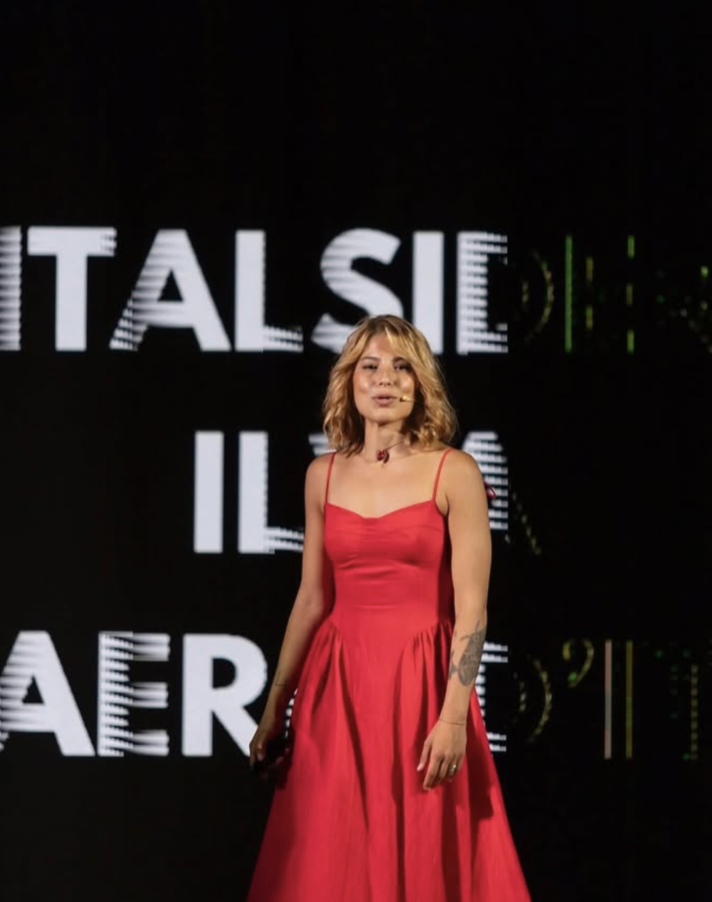

Annatina Fanigliulo
Economista e attivista
Si batte per la giustizia climatica, sociale ed economica, con un focus su Taranto e l'ex Ilva.
Leggi di più
Scende in piazza, lotta per i diritti umani e i diritti della natura, credendo fermamente che il futuro non possa prescindere dall'equilibrio tra la salute del pianeta e quella delle comunità. Il suo lavoro si basa su analisi approfondite e un impegno quotidiano per costruire un mondo più giusto, in cui sostenibilità e diritti siano al centro di ogni scelta politica e sociale.